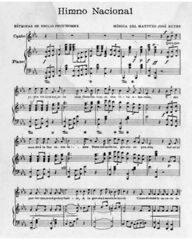

El himno nacional de la República Dominicana es la composición musical patriótica que representa al país y que, junto con la bandera y el escudo, tiene la categoría de símbolo patrio.
Su letra fue compuesta por Emilio Prud’Homme y la partitura musical del Himno fue creada por el Maestro José Reyes en 1883, quien le pidió a Prud'Homme que escribiera unos versos patrióticos que acompañaran sus compases.
La música tuvo un éxito instantáneo, de tal forma que cuando los restos del libertador de la República Dominicana, Juan Pablo Duarte, fueron traídos desde Venezuela en 1884, se escogió la música compuesta por el maestro Reyes.
Con las letras no sucedió lo mismo. Las letras de Emilio Prud’Homme contenían errores en referencias históricas y algunos defectos de métrica. Varios intelectuales dominicanos de la época criticaron esas letras e incluso escribieron nuevos versos que acompañaran la música del himno.
En 1897, Emilio Prud’Home presentó de forma pública una versión corregida de sus letras originales, que terminó con los debates y fue aceptada por todos. Son las letras actuales del himno.
Ese mismo año, el presidente Ulises Heureaux envió un proyecto de ley al Congreso para adoptar como el himno nacional dominicano, y se comenzó a usar en todas las ocasiones oficiales, pero Heureaux fue asesinado en 1899 antes de tener ocasión de promulgarlo.
La extraordinaria convulsión política del inicio del siglo XX en la República Dominicana impidió que se tomaran acciones sobre los símbolos de la Patria. Pero en 1934 el Congreso adoptó la composición de Emilio Prud’Homme con la música de José Reyes como el Himno Nacional dominicano.
La primera versión del himno se interpretó por primera vez el 17 de agosto de 1883 en los salones de la Respetable Logia Esperanza Nº. 9, en la ciudad de Santo Domingo, capital de la República Dominicana. La segunda ciudad donde pudieron escucharse las notas musicales del himno nacional dominicano fue Azua.
Quisqueyanos valientes, alcemos Nuestro canto con viva emoción. Y del mundo a la faz ostentemos Nuestro invicto glorioso pendón. ¡Salve! el pueblo que, intrépido y fuerte, A la guerra a morir se lanzó, Cuando en bélico reto de muerte Sus cadenas de esclavo rompió.
Ningún pueblo ser libre merece Si es esclavo indolente y servil; Si en su pecho la llama no crece Que templó el heroísmo viril, Mas Quisqueya la indómita y brava Siempre altiva la frente alzará; Que si fuere mil veces esclava Otras tantas ser libre sabrá.
Que si dolo y ardid la expusieron De un intruso señor al desdén, ¡Las Carreras! ¡Beller!, campos fueron Que cubiertos de gloria se ven. Que en la cima de heroico baluarte De los libres el verbo encarnó, Donde el genio de Sánchez y Duarte A ser libre o morir enseñó.
Y si pudo inconsulto caudillo De esas glorias el brillo empañar, De la guerra se vio en Capotillo La bandera de fuego ondear. Y el incendio que atónito deja De Castilla al soberbio león, De las playas gloriosas le aleja Donde flota el cruzado pendón.
Compatriotas, mostremos erguida Nuestra frente, orgullosos de hoy más; Que Quisqueya será destruida, Pero sierva de nuevo, ¡jamás! Que es santuario de amor cada pecho Do la patria se siente vivir; Y es su escudo invencible: el derecho; Y es su lema: ser libre o morir.
¡Libertad! que aún se yergue serena La Victoria en su carro triunfal, Y el clarín de la guerra aún resuena Pregonando su gloria inmortal. ¡Libertad! Que los ecos se agiten Mientras llenos de noble ansiedad Nuestros campos de gloria repiten ¡Libertad! ¡Libertad! ¡Libertad!
"Presiona reproducir para escuchar el Himno Nacional de La Republica Dominicana"